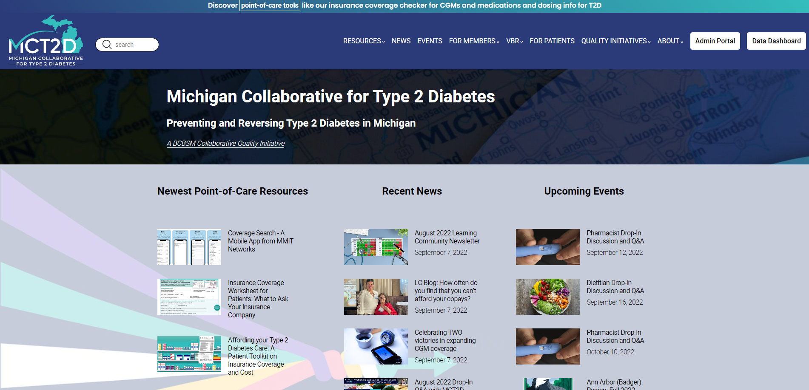
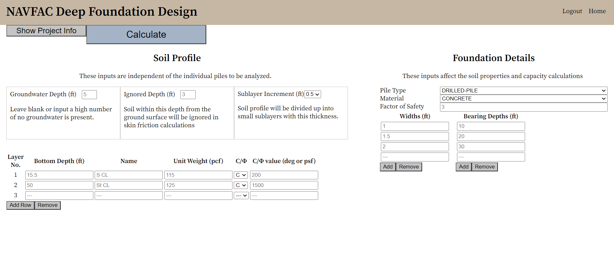

Healthy Eating Jumpstart

The challenge
Healthy Eating Jumpstart is a collaborative program between two Michigan Medicine CQIs, Healthy Behavior Optimization for Michigan (HBOM) and Michigan Collaborative for Type 2 Diabetes (MCT2D). The program offers food assistance resources for Type 2 Diabetes patients with food insecurity. The purpose of this website is to provide low carb eating resources for participants in the Healthy Eat Jumpstart Program that also appeal to health care providers or anybody interested in low carb dieting.
The process
Using Next.JS, I built an interactive, mobile-responsive website based on Figma designs created by the design team. The website uses HBOM’s WordPress API to fetch low-carb recipes. Additional resources are drawn from Contentful, the headless CMS used for MCT2D’s website. The website was initially built over a span of two weeks and continues to receive periodic content updates.
The goal
An interactive, mobile responsive, and website that allows users to find and share content about low carb diets. The Healthy Eating Jumpstart Program was highlighted by the White House at the 2022 White House Conference for Hunger, Nutrition, and Growth.
Learn moreMichigan Collaborative for Type 2 Diabetes - Website Rebuild

The challenge
The website for Michigan Collaborative for Type 2 Diabetes (MCT2D), which was originally built and hosted on SquareSpace, was riddled with visual bugs, had poor mobile responsiveness, had poor search functionality, and was unable to support the growing needs of custom features desired by the collaborative. The goal of this project was to clean up the layout, improve mobile responsiveness, improve page load times, and support additional functionality that would be difficult to achieve on SquareSpace.
The process
Using Contentful, a headless CMS platform, I migrated all existing content, including posts and hosted assets, from SquareSpace to Contentful. I used Next.JS, a popular React framework, to consume the Contentful API and build the website with scalability and performance in mind. Then, I added additional usability features, such as the ability to save bookmarks locally on a device. The project timeline included an approximately 3-month planning phase followed by a 3-month development phase.
The goal
A lightning fast, mobile responsive, and scalable website that allows users to find and share the content they are looking for quickly and easily.
Learn moreNAVFAC - Deep Foundation Design

The challenge
The calculation of axial load capacity for deep foundations is tedious to perform by hand, and layered soil profiles with varying parameters become nearly impossible to analyze without errors. The goal of this application is to automate the analysis of a suite of deep foundations with variable width and embedment depth for complex soil profiles.
The process
I created a package of engineering functions to perform the axial load capacity analysis based on the NAVFAC methodology and wrote unit tests to ensure my functions work as expected. Then, I built and hosted a REST API with an Express server allowing users to create an account and save their projects. Finally, I designed a web application with React that consumes the API and my calculation package to perform engineering analyses and provide a detailed output of the calculations.
The goal
A full-stack web application that simplifies and greatly accelerates the design of deep foundations for axial load capacity. Users are able to save and modify their projects, and they can download a detailed report containing the calculations for their suite of foundations. Whereas the analysis of a single foundation in a uniform soil could take 10 minutes to compute, my application enables the analysis of hundreds of foundations in a complex soil profile within seconds.
Learn moreSupersonic - Fine-Tuned Ear Training
The challenge
There are many ear training apps available for musicians to learn to hear the difference between different melodic intervals. However, there are no apps that train musicians to hear if a given interval is in tune or not. My goal was to create a web application to do just that—Let musicians practice hearing intervals that are slightly out of tune to sharpen their ears and improve their overall musicianship. This project was built over three weeks as a personal passion project.
The process
Using JavaScript’s Web Audio API to generate tones, I built a full-stack web application using the MERN stack (Mongo, Express, Node, React) that generates customizable musical training sessions for the user and saves the results to the server.
The goal
A gamified web application enabling musicians to sharpen their listening skills and track their performance over time with lessons tailored to the user’s needs.
Learn more